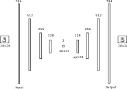

Homework 6: Build Your Own Multilayer Perceptron (BYOMLP) (45 Points)
Chris Tralie
Table of Contents
Logistics / Getting Started
In this assignment, you will implement your own multilayer perceptron (MLP) neural network solver from scratch in python using only numpy and matplotlib. No special libraries like pytorch are required! My aim is to show you how simple the fundamental math ideas really are under the hood, and how most of modern neural nets is just software engineering. If you're still not convinced, read this article by Andrej Karpathy.
You will apply this to both a supervised task: classifying digits, as well as an unsupervised task: learning a low dimensional representation of digits from their high dimensional pixel-based representations. We will be doing something similar to Karpathy's "micrograd" setup, although specializing it to MLPs with matrix multiplication will make it fast enough to do what we need it to do (micrograd is too slow for the applications in this assignment).
Click here to download the starter code for this assignment. Most of your edits will occur in mlp.py. When you are finished, turn in your mlp.py file, as well as your notebook Classification.ipynb and Autoencoder.ipynb
Learning Objectives
- Implement a fast backpropagation algorithm for multilayer perceptrons using numpy operations
- Implement stochastic gradient descent and batch gradient descent
- Explore different MLP architectures for supervised learning
- Implement an MLP-based autoencoder to perform unsupervised dimension reduction
Programming Tasks
Forward pass (10 Points)
Before we do anything else, we need to get our data structures and forward pass locked down. In particular, you will setup code for a forward pass in the MLP class in mlp.py.
Your Task
Have a look at the pseudocode for the forward pass algorithm and fill in the methods __init__, add_layer, and forward in mlp.py.
When you add a layer, you should store as instance variables a weights matrix and a bias matrix of the appropriate shape, as well as the function handles for the nonlinear function and its derivative f and fderiv, respectively, at this layer. The weights should be a 2D array, and the biases should be a 1D array*, and you should randomly initialize them using np.random.randn. Be sure to multiply the initial weights by 0.1 to make sure their standard deviation is 0.1 (smaller standard deviation weights tend to perform better). There is also an optional parameter called "name" that you can use to assign a string name to this layer. This will help us with the disc test and autoencoder task later.
When you do a forward pass, it will help if you store the a's and h's (as defined in the notes) at each layer as instance variables, as you can look them up later when you do backpropagation. You should also take into consideration the optional start and end parameters, which you can use to start an input in the middle of the network and end early.
* It's true that in the notes I had the bias as a column vector, which is technically a 2D array, but it will make things easier if we keep the bias as a 1D array for now
Tips
You may want to look back at the beginning of the backprop module to see an example of how to represent and store weights/biases/functions and then apply them in a forward loop, though we're adding some embellishments here, and we're encapsulating the layers in a class.
Testing
As an example, suppose you had the following code:
The first pass should output an array with a single element, since it goes from 10, to 20, to 5, to 8, to 7, to 1. The second pass takes in an array of 20 elements (the input to "special_start") and should output an array of 7 elements (the output of "special_end").
Backpropagation (15 Points)
Now we're ready to finish the API for our MLPs by implementing backpropagation to train them.
Your Task
First, fill in the method backward to do a forward pass, followed by backpropagation, with respect to a particular input/output pair x and y. During backpropagation, compute and accumulate the gradients of all of the weights and biases at each layer. Refer to the pseudocode in the backprop notes for how to do this. As part of this, you'll want to add instance variables to store the derivatives of all weights and biases, which you should reset to 0 when calling the zero_grad method.
Finally, fill in the step method to subtract alpha times the accumulated gradients from the weights/biases.
Testing
To help you test your system, I've provided the notebook DiscTest.ipynb which will learn a network to separate the points on the inside of a disc from the points on the outside of the disc, which is not something that we could do with 2D logistic regression! Dataset shown below:

To do the separation, we use a network with the following three layers:
- 100 neurons with a leaky ReLU
- 2 neurons with a leaky ReLU
- The final output neuron with a logistic activation, using the logistic loss
Using our little API, we can define this network with the following code
Then, we can perform stochastic gradient descent on each epoch; that is, we shuffle all of the examples and send them through one by one, updating the weights each time. This is all in the notebook already and you can just run it. If it works properly, you should see an animation like this, where the left plot shows the 2 coordinates of the output of layer2, and the right plot shows the loss over time. As you can see, after a few iterations, the orange and blue points become linearly separable after the output of layer2.

Digits Classification (10 Points)
We're now ready to apply our MLPs to our first real application: digit classification!
We'll use a loss function which is a generalization of the logistic loss to multivariate output. Given the output yest of the softmax function and the ground truth 1-hot vectors y, we can define the multivariate cross-entropy logistic loss as
\[ L(y, y_{\text{est}}) = -\sum_{i=1}^N y[i] \log(y_{\text{est}}[i]) \]
where in our digits problem N = 10. We need to take the gradient of this loss with respect to the input to the logistic function, but this is actually incredibly simple and exactly like the single variable logistic loss case. In particular, the gradient of the ith component to the input of the softmax function is simply yest[i] - y[i]
yest[i] - y[i]
This should look pretty familiar! For details, look back to the update rules in the last assignment, and refer to my derivation in the softmax module. To save time, I've already implemented this for you. The loss function and its derivatives are the methodssoftmax_est_crossentropy_loss and softmax_est_crossentropy_deriv, respectively, in the losses.py file.
Your Task
Create a Jupyter notebookClassification.ipynb to train a neural network in our little API that classifies digits in the MNIST dataset. Train a network using stochastic gradient descent on the training set for 100 iterations, and report the accuracy on all of the images on both the training set and the test set. To load train set, use the load_images method in digits.py:
You should compare two networks: the first network should have a single hidden layer with 20 neurons and a softmax output, which you can define like this: The second network should have an additional ReLU layer with 40 neurons at the beginning before the layers with 20 and 10. Indicate clearly in your notebook which network works better and why you think this is, and if it seems like either network is overfitting at some point.
Digits Autoencoder (10 Points)
In this task, you will create an autoencoder (encoder/decoder network) to compute a dimension reduced representation of the digits, which serves as a warmup for more complicated examples such as low dimensional representations of face images.
Up to this point, the only technique we've seen for unsupervised dimension reduction is principal component analysis (PCA), which is a linear dimension reduction technique; in particular, it fits a flat to data in high dimensions. To help visualize digit dimension reductions, I've created a method in digits.py called plot_digits_dimreduced_examples that shows examples of encodings projecting digits to their dimension reduced representation, as well as some example decodings back up to pixel space. The following code implements PCA in an API compatible with this:
The two principal components with the highest variance explain 16.8% of the variance in the dataset, and examples of encodings look like this:
This is not bad for a linear dimension reduction technique! We can certainly see the separation between 0 and 1, and the 4's, 7's and 9's are in one cluster (though they're mixed up). One downside, though, is that every decoded result from the 2D "latent space" is very blurry. To improve this, we'll turn to an neural autoencoder, which is a nonlinear dimension reduction technique that we can create using our MLP API.
Your Task
Create a notebook Autoencoder.ipynb in which you create and train an autoencoder for digits.
Architecture
You should use the following architecture
It has the following properties:
- The input and output are both flattened 784 dimension representations of the pixels
-
Name the 2D latent layer
"latent"and the layer right after that"up128". This will help with plotting and debugging -
Every layer, except for the latent layer and the last layer, uses leaky ReLUs. The 2D latent and last layer use logistic functions.
The rationale for this is that having a logistic at the latent layer squashes the dimension reduced representation to the box [0, 1] x [0, 1], which forces it to fill out the box. Having a logistic as the last layer gives the network a hint that the grayscale values in the output should be between 0 and 1.
Training
To train the network, use squared loss (which is provided in losses.py) and batch gradient descent with a batch size of 16. This means that every epoch, you should shuffle the data and accumulate the gradient over every run of 16 examples, taking a gradient descent step and resetting the gradients once these gradients have been accumulated. Go for at least 3 epochs (this may take a few minutes). Use an initial learning rate of 1e-4, and shrink this learning factor by 2x at the end of each epoch.
To see if this is working properly, use the plot_digits_dimreduced_examples method. Below is an animation of the training of a properly working example. You'll notice that as the learning rate decreases, it settles down into a local min. Your results may be different due to random initialization of the weights!

And below is the final frame. Notice how, compared to PCA, the digits are separated out better, and the encodings are a bit sharper. There is still a lot of confusion between 4/7/9, but we did much better separating out 2 and 6 from the rest, and the variance in the 1 and 0 classes are much more visible.
Latent Traversal (For Fun)
This autoencoder gives us a nice way to interpolate between examples. To get started, note that we can input a 2D vector and put it through the decoder part by starting at "up128"
In my trained network above, this gives the following:
Which makes sense, because the lower left is in the 1's range of the image. We can go further and make an animation of traversing the latent space. For instance, let's suppose I wanted to go around a circle
Then I'd get the following animation on my network:
This really gives an idea of how everything is connected in the latenet space! This all gets even more exciting when we move on from these low resolution digits to, for instance, face images!